Explore
Retarget
Save Image to ComfyUI
💗 Support
Github
Contributors

Rotate

Pan
Zoom
Skeleton
Rotate Model to face front
(blue origin line)
X
Y
Z
Skeleton template:
Select a skeleton
Human
4 Leg Creature
Bird
Dragon
Skinning algorithm:
Closest Distance Targeting
Closest Bone
Closest Distance Child
‹ Back
Bind pose
0
Loading animation data
save_alt
Download
0
play_arrow
0
/
0
Camera Presets
Camera Tuning
animation
videocam
tune
accessibility_new